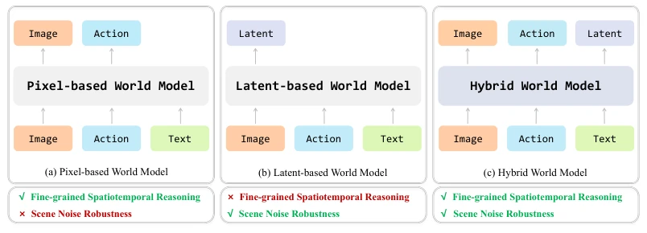
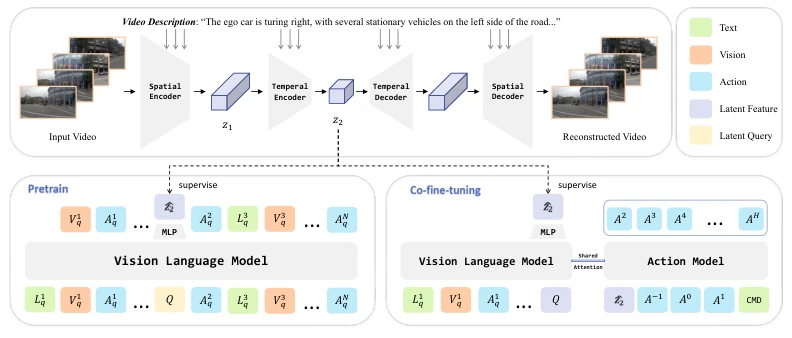
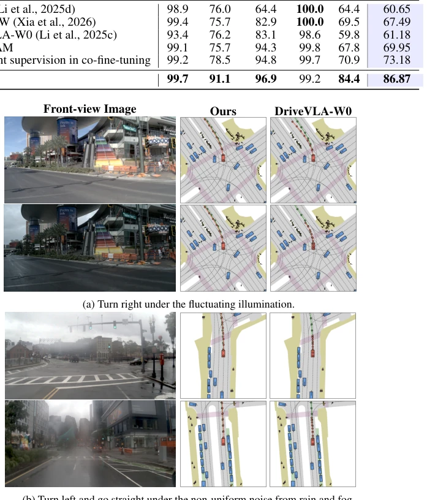
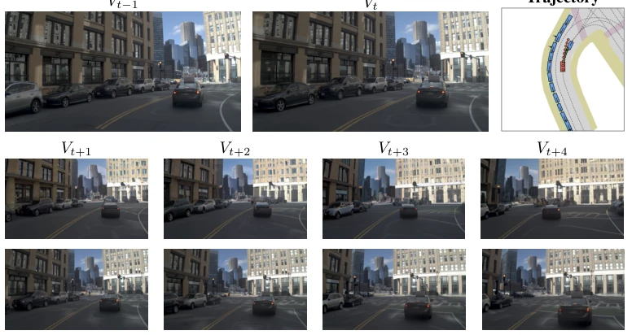
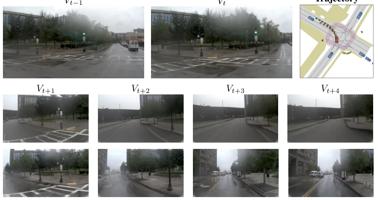
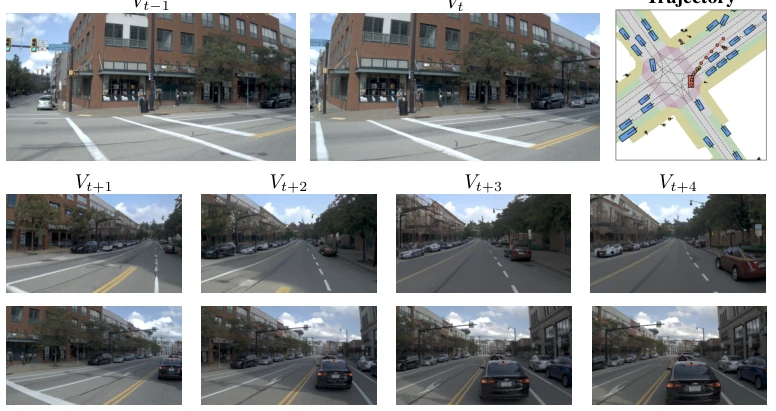
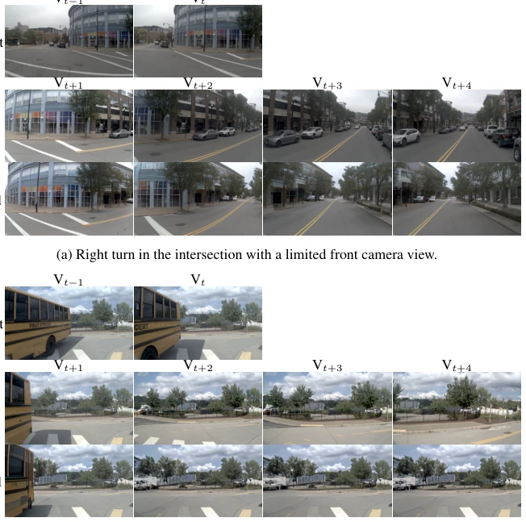
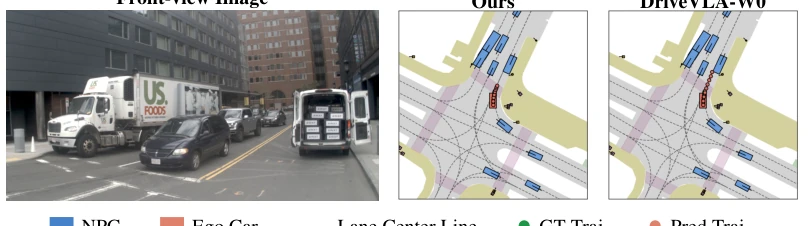
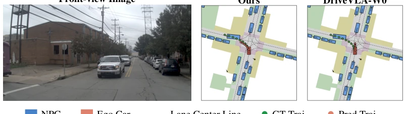
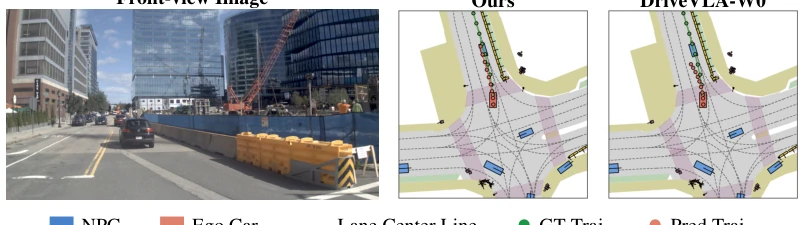

This paper from BYD attempts to implement a "mixed doubles" approach on the "world model" track of end-to-end autonomous driving. It claims to combine the granularity of pixel-level supervision with the robustness of latent representations, which sounds promising, but essentially it just puts a VAE disguise on a VLA model. Although it achieved SOTA on NAVSIM, the limitations of monocular cameras were fully exposed in turning scenarios (Figures 9, 10), and the so-called "first comprehensive analysis" has some marketing suspicion. However, with industrial intervention, deployability is indeed stronger than pure academic models, but do not expect it to handle all extreme weather, after all in Figure 3 it is only "consistent performance", not claiming to be "invincible". Additionally, failure cases show insufficient capture of small elements like red traffic lights and brake lights, indicating that "world models" are not omnipotent, and causal reasoning remains a difficulty.
研究动机Motivation
现有世界模型分两派：像素派（如 DriveVLA-W0, Li et al., 2025c）和潜在派（如 Latent-WAM, Wang et al., 2026）。像素派重建帧，细节好但怕噪点，下雨天就崩；潜在派压缩特征，抗噪强但丢了空间细节，容易幻觉。HyWorldVLA 想走中间路线，解决这个 trade-off。像素级重建能保留几何约束，但受环境变化（雨雾光照）影响大；潜在预测虽鲁棒但缺乏像素级 grounding，导致表征退化。作者指出需要统一这两种范式，既要有细粒度时空推理，又要在噪声场景下保持稳健，这是端到端自动驾驶部署的关键瓶颈。
Existing world models are divided into two schools: the pixel school (e.g., DriveVLA-W0, Li et al., 2025c) and the latent school (e.g., Latent-WAM, Wang et al., 2026). The pixel school reconstructs frames, good details but afraid of noise, collapses on rainy days; the latent school compresses features, strong noise resistance but loses spatial details, prone to hallucinations. HyWorldVLA aims to take a middle route to solve this trade-off. Pixel-level reconstruction can preserve geometric constraints but is greatly affected by environmental changes (rain/fog/lighting); latent prediction is robust but lacks pixel-level grounding, leading to representation degradation. The authors point out the need to unify these two paradigms, having both fine-grained spatiotemporal reasoning and robustness in noisy scenarios, which is a key bottleneck for end-to-end autonomous driving deployment.

Figure 1: Comparison of world model paradigms. (a) Pixel-based World Model: iteratively pre- dicts actions and images, prone to scene noise; (b) Latent-based World Model: predicts latent states, weak in spatiotemporal dynamics modeling; (c) Hybrid World Model: our method simultaneously models iterative action-image prediction and future latent state prediction.
The overall framework is divided into three stages. First, train a text-guided video VAE (VideoVAEPlus, Xing et al., 2024), compressing video through spatial and temporal encoders, and using Flan-T5 text embeddings for cross-modal attention to suppress motion ghosting. In the pre-training stage, the world model simultaneously predicts video latents and reconstructs pixel frames, introducing a learnable latent query Q to aggregate information, with the loss function including language, action, visual token prediction, and latent consistency constraints. In the fine-tuning stage, the model only predicts latent features, which are passed to the action expert via a joint attention mechanism to generate trajectories. The core innovation lies in the dual supervision (pixel + latent) during pre-training to prevent representation collapse, and utilizing latents during fine-tuning to maintain temporal compactness, balancing accuracy and robustness. Additionally, the action expert supports both selective and generative (e.g., Flow Matching) paradigms, enhancing the framework's generality.

Figure 2: Overview of HyWorldVLA. HyWorldVLA consists of three training stages. First, a video VAE model is trained under text guidance to compress and reconstruct video frames, thereby providing ground-truth targets for subsequent training. In the pre-training stage, sequences com- posed of text, images, and actions are used to train the world model for iterative prediction, where a learnable latent query Q is introduced to aggregate information and predict future latents. In the co-fine-tuning stage, the historical sequences together with Q are fed into the VLM to obtain global context and predicted latents, which are then passed through a joint attention mechanism to the ac- tion expert for action generation.
Tested on NAVSIM v1 and v2 benchmarks, metrics include PDMS and EPDMS. Compared to DriveVLA-W0 and Latent-WAM, HyWorldVLA achieves SOTA results. Especially in noise robustness testing, using 655 rain/fog cases, HyWorldVLA scored 86.87, far higher than pixel-based baselines (e.g., WoTE 60.65). Ablation studies show that visual token weight λ1 should not be too high during pre-training, and latent supervision weight λ3 needs to be moderate during fine-tuning. Failure cases show that monocular view easily loses lane line information during left turns, and recognition of queued vehicle states is insufficient, indicating that multi-view fusion remains a future direction.

Figure 3: Hybrid World modeling improves the robustness to the scene noise. (a) DriveVLA- W0 suffers from severe behavioral variance under illumination changes, while our approach retains remarkable consistency. (b) DriveVLA-W0 exhibits overly conservative behavior that sacrifices traffic efficiency, while our method retains accurate driving with human-aligned trajectories.

Figure 8: Failure case analysis: deficits in capturing critical small elements. We illustrate a failure case in which our model attempts to nudge a queuing vehicle ahead. The world model’s predictions reveal that the model misclassifies the queuing vehicle as low-speed moving and tries to nudge past it for higher traffic efficiency, failing to recognize the queuing state indicated by the red light ahead and the vehicle’s brake lights. Since this critical cue is only discernible from a few pixels, fine-grained element capture and causal reasoning remain a core future research direction.

Figure 9: Failure case analysis: constraints of front-view cameras under left turn. We present a failure case in which our model crosses the central double yellow line during left turns. Limited by field of view, historical and current frames fail to deliver valid cues for the target lane in the left-turn process; the world model’s predictions correspondingly lack the double road marking. This demonstrates the importance of multi-view camera inputs for turning scenarios, while trading off camera count against inference latency remains a key unresolved issue.

Figure 10: Failure case analysis: constraints of front-view cameras under right turn. We present a failure case in which our model rear-ends a queuing leading vehicle during right turns. Limited by field of view, valid cues of surrounding vehicles are unavailable in the right-turn process, and the world model’s predictions correspondingly miss the preceding vehicle. This again demonstrates the necessity of multi-view camera inputs for turning scenarios.
其他图片Other Figures

Figure 4: Future image generation. (a) During right turns, despite the absence of lane markings in front-view camera inputs, our model reliably forecasts future lane markings, evidencing its learned world knowledge. (b) Our model correctly forecasts the motion pattern of the oncoming bus and the ego car’s corresponding rightward yielding action, evidencing its complex scene understanding capability.

Figure 5: Turn right and stop behind a truck with its trunk open. DriveVLA-W0 baseline fails in trying to nudge a stopping truck with its trunk open. Our method stops and keep a fit distance to it.

Figure 6: Left turn in a small intersection with the limited view. DriveVLA-W0 baseline goes straight at a small intersection where it is supposed to turn left. Our method turns left even though the front view is limited.

Figure 7: Turn left at the construction intersection. DriveVLA-W0 baseline goes into the opposite lane at the construction intersection. Our method turns left and keep in the right lane.